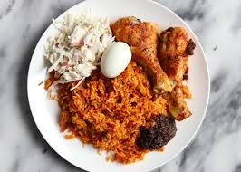

JOLLOF RICE RECIPE

Jollof is a staple across West Africa, and every country has their own variation.
There’s a mostly friendly rivalry called “jollof wars,” over which country has the
best jollof rice, but I think jollof is always good, no matter where it comes from.
Rice is cooked in a mixture of blended tomatoes, peppers,
onions, and garlic, as well as stock and plenty of herbs and seasonings,
and all of the delicious flavors infuse into the rice as it cooks.
Traditionally it was cooked over an open flame, which gave it
its signature smoky flavor, but you can still achieve that rich
smokiness on the stovetop.
Ingredients
For the red pepper base:
- 3 medium Roma tomatoes (about 12 ounces total)
- 1 large red bell pepper (about 8 ounces)
- 1/2 large red onion (6 to 7 ounces)
- 1 (1-inch) piece ginger
- 1/2 to 1 habanero pepper
- cloves garlic
For the jollof rice:
- 1/2 large red onion (6 to 7 ounces)
- 4 cups uncooked jasmine or basmati rice
- 1/2 cup vegetable oil
- 3 tablespoons tomato paste
- 1 tablespoon kosher salt, plus more as needed
- 2 teaspoons curry powder
- 4 sprigs fresh thyme, or 1 teaspoon dried thyme
- 1 teaspoon ground white pepper
- 2 bay leaves
- 3 cups beef, chicken, or vegetable broth
Cooking Steps:
- Rinse the rice in a colander and set aside to drain.
- Blend the tomatoes, red bell peppers, and scotch bonnet peppers into a smooth paste in a blender or food processor.
- Heat up a large pot on medium heat, and add the vegetable oil.
- Add the chopped onions to the pot, and sauté until they become translucent.
- Add the garlic and ginger paste to the pot, and sauté for a few seconds.
- Add the tomato paste and stir, allowing it to cook for a few minutes.
- Add the blended pepper mix to the pot, and stir to combine with the tomato paste.
- Allow it to cook for 10-15 minutes until the sauce is slightly thickened.
- Add the thyme, curry powder, white pepper, and bay leaf to the pot and stir.
- Pour the chicken or beef stock into the pot and stir to combine.
- Add the rice to the pot and stir to ensure that the rice is well coated with the sauce.
- Cover the pot with a tight-fitting lid and turn the heat to low.
- Allow the rice to cook for 25-30 minutes until it is fully cooked and the liquid has been absorbed.
- Remove the pot from heat, fluff the rice with a fork, and allow it to sit for 5 minutes.
- Serve the Nigerian Jollof rice with your choice of protein, salad, or coleslaw.